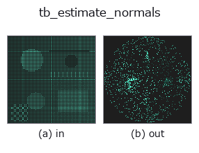

typed op• Datenarten: points → points
• Aufruf: fullseye.apply(img, "tb_estimate_normals", a=0.5, b=0.5) (das 2-D-Modell ist ein Bild plus zwei skalare Regler a,b∈[0,1])

*Die Abbildung ist die tatsächliche Ausgabe auf einer synthetischen 128×128-Eingabe. Links Eingabe, rechts Ausgabe. Punktwolken als Draufsicht-Streudiagramm (Helligkeit = z), 1-D-Reihen als Linie, Volumen als Maximum-Projektion entlang z, Videos als mittleres Bild, komplexe Bilder als Betrag; Rückgabewerte, die kein Bild ergeben, werden als Werte gezeigt.*
Regler a durchfahren (0,1 / 0,5 / 0,9, der andere Regler auf Standard):
▸ tb_estimate_normals: knob a sweep (docs site)
*Regler b ändert die Ausgabe nicht (gemessen: identisch bei 0,1 / 0,5 / 0,9).*
Stufen (die vorangehenden Ops → dieser Op, von links nach rechts):
▸ tb_estimate_normals: stages (docs site)
Auf anderen Bildern (synthetische Szene / Foto / Münzen. Obere Reihe: Eingaben, untere Reihe: deren Ausgaben. Regler auf Standard):
▸ tb_estimate_normals: other inputs (docs site)
Punktwolken-Normalen, einheitlich nach außen ausgerichtet (vom lokalen Nachbarschaftsschwerpunkt weg). → (N,3).
> Die ausführliche Beschreibung unten ist der Originaltext — Zusammenfassung und Überschriften sind übersetzt.
手順(各点、Python ループ): `cKDTree で自身を含む k+1 近傍(k は N-1 に切り詰め)を取り、クエリ点を原点にした近傍座標の散布行列 local.T @ local` の最小固有ベクトルを法線にする(単位長)。向きは「近傍重心との内積が正なら反転」= 近傍重心から離れる側に揃える。
• 近傍が 5 点未満の点は固定値 `(0, 0, 1)` を返す(推定していない)。
• 向き付けは局所ヒューリスティクスで、閉じた凸形状なら外向きだが、開いた面・薄板・凹部では隣接点どうしで向きが食い違い得る(大域一貫性は保証しない)。大域的に揃えるには `orient_normals に通すか、最初から estimate_oriented_normals を使う。organized 深度画像なら normals_from_depth` が視点向きで速い。
• 返り値は float64 (N,3)。`k` 既定 25。決定論的。
• 内部は `principal_curvatures` と同じ計算を通る(法線推定にも二次曲面フィットまで走る)ので、点数が多いと遅い。
2-D 進化レジストリへ橋渡しした 3d の op `estimate_normals。実装は同じで、呼び出し規約だけ op(v, a, b) に合わせてある。a が k(既定 25)を振る。b` は未使用。
• Katalog der Beispieldaten (Download-URLs / Lizenzen) — 2-D nutzt skimage.data (BSD/Public Domain) plus synthetische Bilder, 3-D nennt Download-URLs echter Datenquellen (Stanford, PDS, …).
• Herkunft und Literatur der Operatoren — die Quellen der Forschung/Verfahren, auf denen diese Operatorfamilie beruht.
Das Programm unten ist nachweislich lauffähig (gleiche Eingabe wie die Abbildung). In der Studio-Hilfe wird dieser Block zu Schaltflächen, die es sofort laden und ausführen.
img_to_points 0.50 0.50 tb_estimate_normals 0.50 0.50
▸ Load this pipeline · Load & run
Die folgenden Beispiele rufen den zugrunde liegenden Ledger-Op estimate_normals auf. Dieser Brücken-Op ist dieselbe Implementierung, angepasst an die Konvention fn(v, a, b); das Verhalten gilt unverändert (nur die Aufrufform unterscheidet sich).
• cylinder_axis_metrology — py -3.11 examples_3d/cylinder_axis_metrology.py
• feature_register — py -3.11 examples_3d/feature_register.py
• oriented_normals — py -3.11 examples_3d/oriented_normals.py
points als Eingabe)identity · tb_points_to_voxel · tb_estimate_point_normals · tb_iss_keypoints · tb_angle_3points · tb_project_points · tb_render_point_depth · tb_statistical_outlier_removal
typed)tb_points_to_voxel · tb_estimate_point_normals · tb_iss_keypoints · tb_angle_3points · tb_project_points · tb_render_point_depth · tb_statistical_outlier_removal · tb_radius_outlier_removal
*Provenance: ops.py — 2D Operator-Registry. Diese Notiz wird von tools/opdocs.py md erzeugt (nicht von Hand bearbeiten).*
© 2026 Kazufumi Furuse — Fullseye operator documentation. Licensed under Apache-2.0.
{kind=link}
{kind=link}
{kind=link}